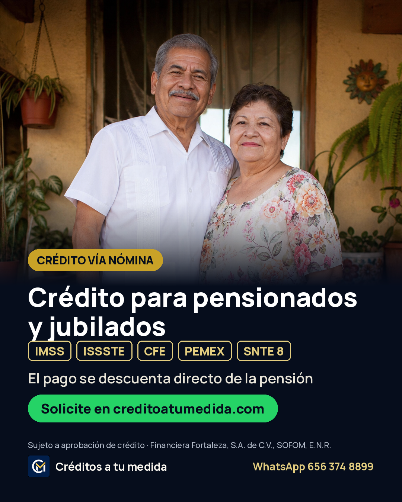
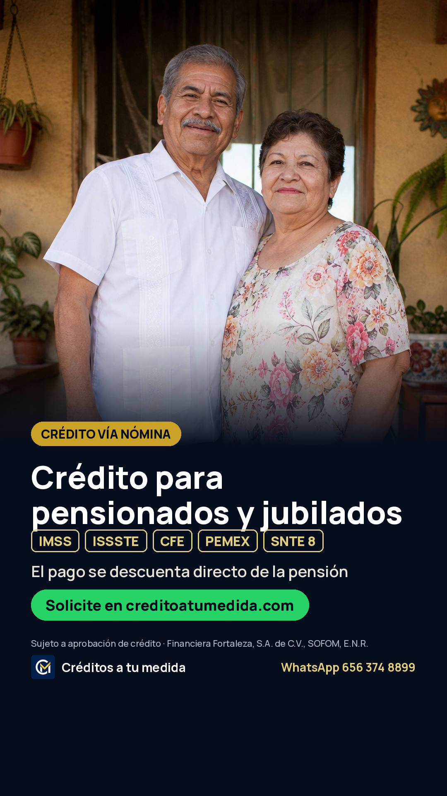

Campaña de solicitudes · Créditos a tu medida
1 campaña → 1 conjunto → 3 anuncios. Todo apunta a creditoatumedida.com y optimiza a Lead (formulario enviado = llega al CRM).
Resumen
Presupuesto$800 MXN total (de por vida) ≈ $100/día
FechasLun 19 oct 00:00 → Lun 26 oct 23:59
ObjetivoClientes potenciales → Sitio web → evento Lead
PúblicoCd. Juárez · 50 a 65+ · sin intereses · excluir EE.UU.
Anuncios3 (no más: con $800 cada anuncio extra roba datos)
Estimado honesto8–25 solicitudes si el costo por lead cae entre $30 y $100. Es prueba, no garantía.
Por qué así (lo que hace que funcione con poco dinero)
- Edad 50+ fija. Verificado hoy en Meta: la categoría especial financiera (que bloquea edad y obliga 18-65+) es obligatoria solo si el anunciante es de EE.UU. o el anuncio llega a EE.UU./Canadá/partes de Europa. Juárez-solo no entra, así que podemos cerrar la edad. Con $800 no hay dinero para pagarle impresiones a gente de 25 años.
- Excluir Estados Unidos. El radio de Juárez cruza a El Paso. Si el anuncio llega a EE.UU., Meta exige la categoría especial y se pierde el filtro de edad.
- Presupuesto de por vida con fechas. Meta reparte el gasto en los días y horas con más probabilidad de lead; no se pasa de $800.
- 3 ángulos distintos (rapidez, para quién es, facilidad) con 2 textos y 2 titulares cada uno: Meta prueba las combinaciones y empuja la ganadora.
- Letra grande y trato de usted en las piezas: el público es 55+ y lee en celular.
Las 3 piezas y sus copys
01 · Depósito el mismo día Rapidez (la oferta más fuerte del sitio)
Texto principal A
Solicite antes de las 3:00 pm y, si sus documentos están en orden, su crédito se deposita ese mismo día. Crédito vía nómina para pensionados y jubilados del IMSS, ISSSTE, CFE, Pemex y SNTE Sección 8. El pago se descuenta directo de la pensión. 👉 Deje sus datos en creditoatumedida.com y un asesor le llama en horario de oficina.
Texto principal B (agregar como opción)
Antes de las 3 de la tarde, el depósito sale el mismo día; después, al día siguiente. Así de claro. Pensionados y jubilados del IMSS, ISSSTE, CFE, Pemex y SNTE Sección 8, con atención en persona en Zona Pronaf. Más de 8 años otorgando créditos en Ciudad Juárez. Inicie su solicitud en creditoatumedida.com
Titular A
Depósito el mismo día
Titular B
Solicite antes de las 3:00 pm
Descripción
Sujeto a aprobación de crédito
URL del sitio web (con UTM)
https://creditoatumedida.com/?utm_source=facebook&utm_medium=paid_social&utm_campaign=creditos_800_oct26&utm_content=ad-01
Botón (CTA): Solicitar ahora
02 · Para quién es Filtra al público correcto (dependencias)


Texto principal A
Crédito vía nómina para pensionados y jubilados del IMSS, ISSSTE, CFE, Pemex y SNTE Sección 8 en Ciudad Juárez. ✅ El pago se descuenta directo de la pensión ✅ No necesita historial crediticio perfecto ✅ Un asesor le acompaña de principio a fin Solicite en creditoatumedida.com
Texto principal B (agregar como opción)
Pensionados y jubilados de IMSS, ISSSTE, CFE, Pemex y SNTE Sección 8: en Créditos a tu medida el trámite es claro y en persona, en Zona Pronaf. Deje sus datos en nuestra página y un asesor le contacta para explicarle todo, sin compromiso.
Titular A
Crédito para pensionados y jubilados
Titular B
IMSS · ISSSTE · CFE · Pemex · SNTE 8
Descripción
Financiera Fortaleza, SOFOM, E.N.R.
URL del sitio web (con UTM)
https://creditoatumedida.com/?utm_source=facebook&utm_medium=paid_social&utm_campaign=creditos_800_oct26&utm_content=ad-02
Botón (CTA): Solicitar ahora
03 · INE + NSS Facilidad para empezar
Texto principal A
Con su INE y su número de seguro social le cotizamos. Así de fácil empieza su crédito vía nómina. No necesita historial crediticio perfecto: cada caso se revisa de forma individual. Para pensionados y jubilados del IMSS, ISSSTE, CFE, Pemex y SNTE Sección 8. Cotice sin compromiso en creditoatumedida.com
Texto principal B (agregar como opción)
Cotizar no cuesta nada. Deje su nombre y teléfono en creditoatumedida.com y un asesor le explica qué documentos necesita según su dependencia. Atención en persona: Benjamín Franklin 3220, Int 22-D, Zona Pronaf (por la entrada de Subway).
Titular A
Con su INE y NSS le cotizamos
Titular B
Cotice sin compromiso
Descripción
Pensionados y jubilados · Cd. Juárez
URL del sitio web (con UTM)
https://creditoatumedida.com/?utm_source=facebook&utm_medium=paid_social&utm_campaign=creditos_800_oct26&utm_content=ad-03
Botón (CTA): Obtener cotización
Paso a paso en Ads Manager (≈15 min)
Antes de empezar (2 min): Events Manager → dataset
1401885575462193 → Probar eventos → abre creditoatumedida.com, manda el formulario con un teléfono de prueba y confirma que aparece Lead. Si no aparece, no lances: avísame. Luego borra ese lead de prueba del CRM.1 · Campaña
- adsmanager.facebook.com → + Crear → Clientes potenciales → Continuar.
- Si pregunta configuración: elige Campaña de clientes potenciales manual (no la Advantage+ automática; esa no deja fijar edad).
- Nombre:
CAM · Leads Web · $800 · Oct26 - Categoría especial de anuncios: déjala SIN marcar (ver “Por qué así”). Si tu portafolio de negocio está dado de alta en EE.UU., Meta la va a exigir: márcala “Productos y servicios financieros” y en el público solo pon Juárez (edad quedará 18-65+).
- Presupuesto de la campaña Advantage+: activado → Presupuesto total →
800MXN.
2 · Conjunto de anuncios
- Nombre:
Juárez 50+ · Lead web - Ubicación de la conversión: Sitio web (no formulario instantáneo, no WhatsApp, no Messenger).
- Objetivo de rendimiento: Maximizar el número de conversiones. Dataset:
1401885575462193→ evento Cliente potencial (Lead). - Calendario: inicio lun 19 oct 00:00, fin lun 26 oct 23:59.
- Público → Usar opciones de público originales (o “Cambiar a opciones originales”):
- Ubicación: Ciudad Juárez, Chihuahua → personas que viven en esta ubicación.
- En ubicaciones → Excluir → escribe Estados Unidos.
- Edad 50 – 65+. Sexo: todos. Idioma: Español.
- Segmentación detallada: vacía. Nada de intereses, el filtro lo hacen la edad y las piezas.
- Ubicaciones → Ubicaciones manuales: deja solo Facebook (Feed, Stories, Reels) e Instagram (Feed, Stories, Reels). Quita Audience Network, Messenger y Threads; con poco dinero ahí se va en clics basura.
3 · Anuncios (repetir 3 veces)
- Identidad: página Credito a tu Medida (+ Instagram si está conectado).
- Formato Imagen única → sube la 4:5 → en “Personalizar por ubicación” pon la 9:16 para Stories y Reels.
- Texto principal A, y “+ Agregar opción de texto” para el B. Titular A y B. Descripción.
- Destino: Sitio web → pega la URL con UTM de ese anuncio. CTA el indicado.
- Mejoras creativas Advantage+: apaga todo lo de texto generado por IA, expandir imagen, música y “agregar superposiciones”. En crédito, un texto inventado por IA puede prometer algo que no ofrecemos y causar rechazo.
- Seguimiento: confirma que el dataset esté marcado en “Eventos del sitio web”. Publicar.
Reglas que ya cumplen estos anuncios (para que no los rechacen)
- Crédito a largo plazo (más de 90 días) por descuento de pensión: permitido. Meta prohíbe préstamos de día de pago, adelantos de nómina y préstamos de ≤90 días. Política de Meta
- Ninguna tasa, monto, CAT ni plazo (si se menciona uno, hay que mostrar todos).
- Nada de “¿estás endeudado?” ni “¿eres jubilado?”: Meta prohíbe afirmar o insinuar atributos personales (situación financiera, edad). Todo va en tercera persona/usted.
- Razón social visible en cada pieza: Financiera Fortaleza, S.A. de C.V., SOFOM, E.N.R. Si Meta pide verificar el negocio o la autorización financiera, se hace con los papeles de la SOFOM.
- El anuncio no pide datos personales dentro de Facebook; el formulario está en el sitio.
Cómo operarla los 8 días
| Cuándo | Qué hacer |
|---|---|
| Días 1–3 | No tocar nada. Cada cambio reinicia el aprendizaje. Solo contestar cada lead del CRM en menos de 5 minutos en horario: eso decide si el lead se vuelve crédito. |
| Día 4 (jue 22) | Si un anuncio gastó ≥$150 con 0 leads y los otros sí traen, pausa ese. Si ninguno trae leads con $300 gastados, revisa Events Manager (¿llega Lead?) y avísame antes de seguir. |
| Días 5–8 | No subir presupuesto a media prueba. Anotar en el CRM cuáles leads contestan y agendan. |
| Al cerrar | Mándame captura de Ads Manager (gasto, resultados, costo por resultado por anuncio) + cuántos leads agendaron. Con eso decidimos el siguiente mes: escalar el ganador o cambiar creativos. |
Pendiente que afecta conversión
El sitio todavía dice “20+ años” y menciona Gobierno/Educación, mientras los anuncios dicen “más de 8 años” y solo pensionados/jubilados. No lo cambié porque falta el permiso del cliente; si lo autoriza, lo alineo en 10 minutos.